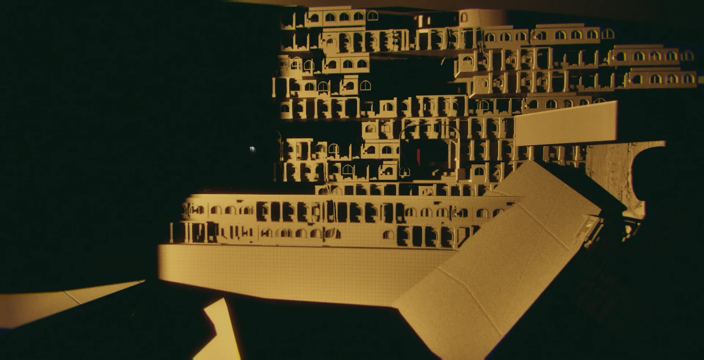
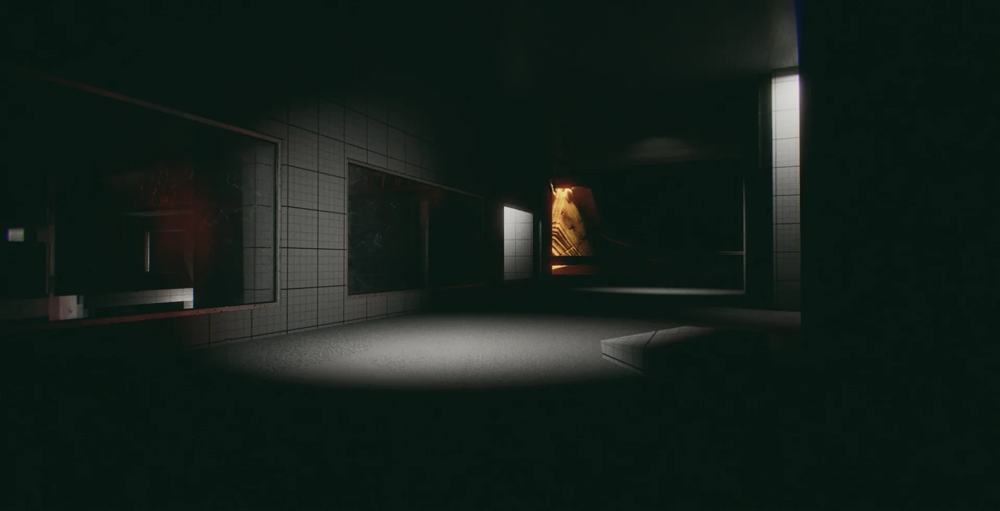
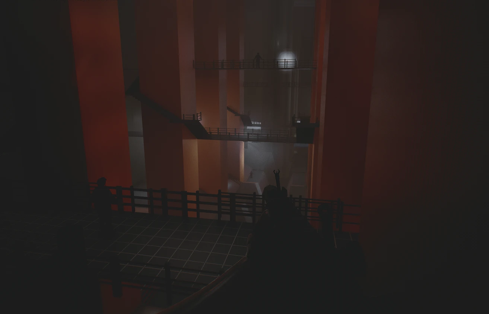
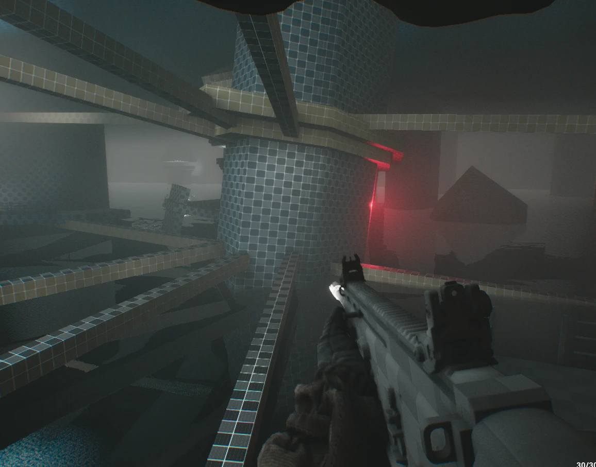
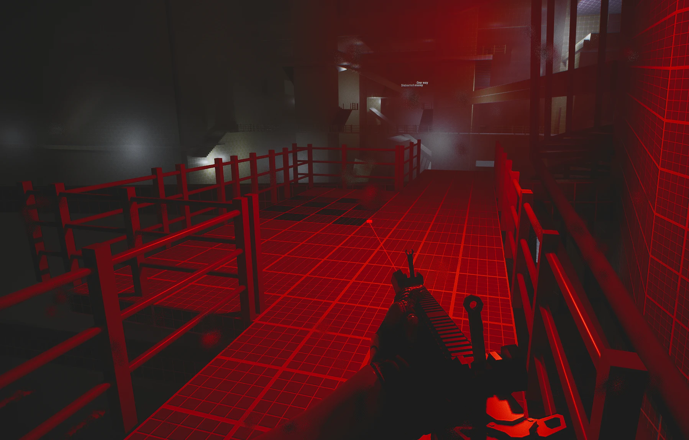
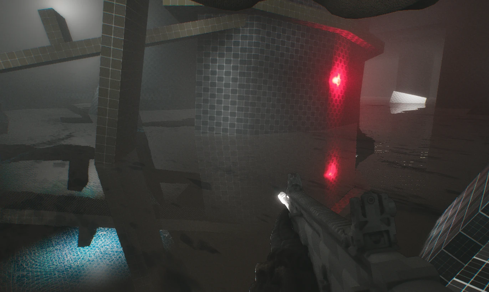
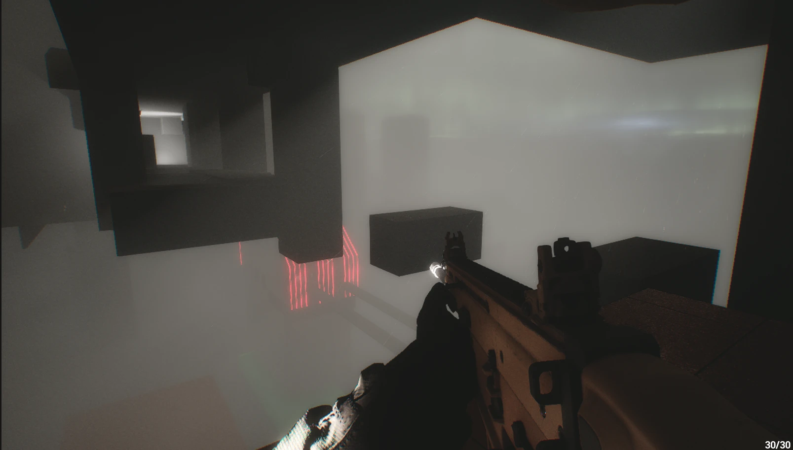
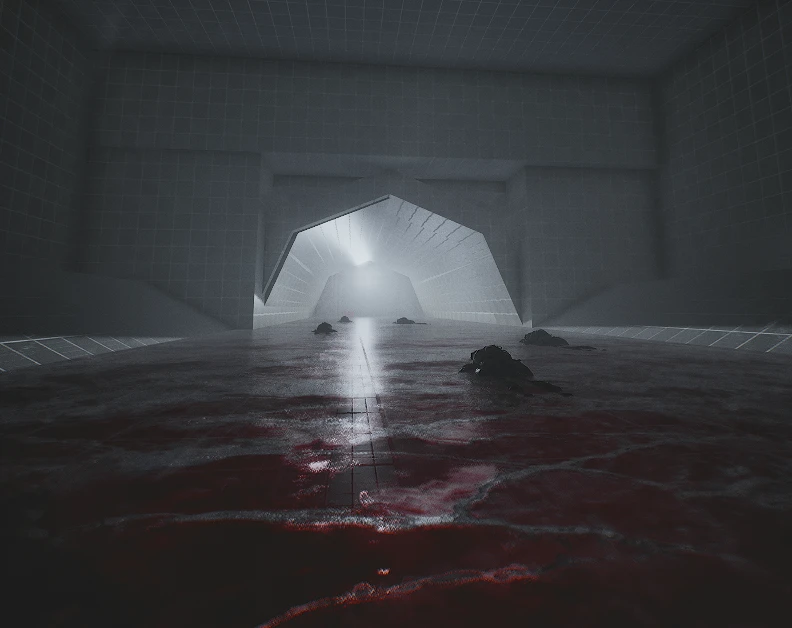
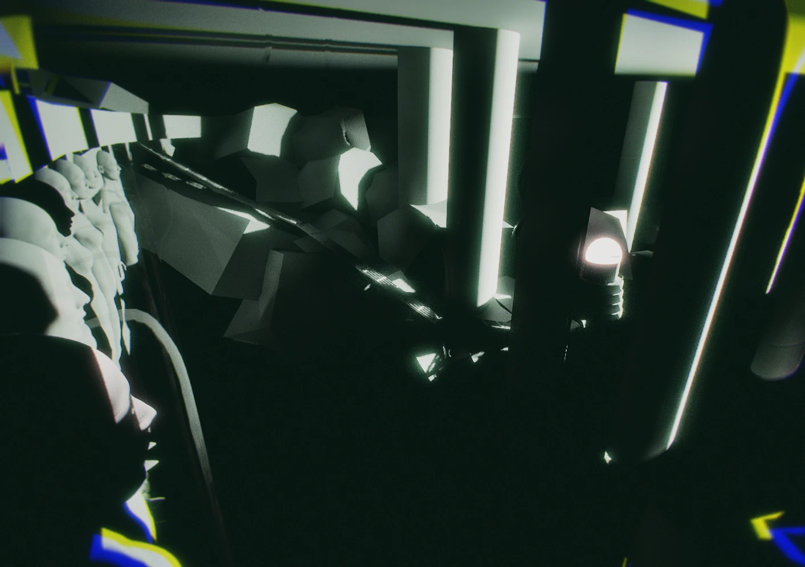

01Context
One structure, many layers, zero signs
- Project
- Obversus: Umbra
- Studio
- GrinGate Studios
- Status
- In development, greybox
- Engine
- Unreal Engine 5
- My role
- Blockout, level design, gameplay lighting
- Period
- 2026 to now
Orient
The player always knows where the Dam is, even deep underground.
Guide
A clear golden path with no arrows, HUD markers or text.
Unsettle
Too big, too empty and slightly wrong.




Work in progress. Greybox materials and placeholder meshes. Images shared with the permission of GrinGate Studios.
02Shape
Reading a megastructure
One dominant form per area
Vertical wall, long truss hall, round stair cages.
Scale contrast
Small catwalks and railings show how big the wall is.
Rhythm and repetition
Repeated ribs and niches let one broken element stand out.
Silhouette first
If it does not read in flat grey, I change the geometry, not the light.




03Light
Leading the player with value and colour
Value as a path
Most of the frame stays dark. Light only where it means something.
Light as a landmark
A light shaft through fog is visible over low walls.
- White and grey Path, safe space
- Red Danger, machinery, alarms
- Green Exits, progress







04Composition
Framing the player's view
Frames inside the frame
Doors and windows isolate the next goal.
Leading lines
Railings, tile grids and beams point to the objective.
Depth layers
Dark foreground, lit middle ground, soft background.
Reveal and reward
A tight corridor opens to a hall seen from above.






05Spaces
Spaces of the Dam

- Dam wall Catwalks, carved niches, a crack and a crashed monorail
- Turbine hall Catwalks on several floors for vertical combat
- Generator hangar Underground hangars and modular connectors
- Sewers A cascading canal from the start pipe to the elevator
- Lobby and elevator A Sequencer ride, tuned for pacing
- Disposal pit A deep, walkable drop to the outflow canal
- Flooded layers Half-sunk tiled rooms, water doubles the light
06Process
Kit, pipeline and lessons
Greybox kit
- Size in centimetres in every mesh name
- Cover heights: 110, 140, 200
- Five material tiers, open to armored
- Packed Level Actors for set pieces
- PCG spline tunnel kit
Pipeline
- World Partition from the start
- Data Layers per sector and enemy set
- Playable end to end, in phases
- Camera bookmarks at key frames
- MCP automation for repetitive work
Lessons
- Light the greybox early
- Scale lies in the editor: test at eye height
- A kit is a contract